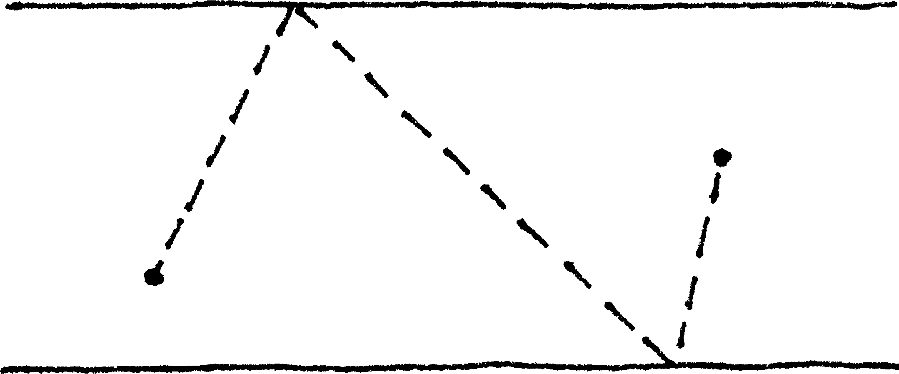
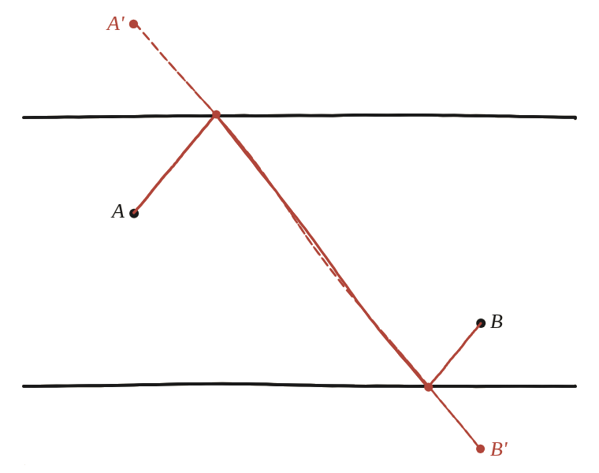

Suposa que dos punts es troben entre dues línies paral·leles. Quin és el camí més curt d'un a l'altre que toqui totes dues línies?

El mateix truc, dues vegades
A la Qüestió 96 el camí tocava una sola recta. Aquí en toca dues —un cop cadascuna. La idea és exactament la mateixa, però cal aplicar-la dos cops, no un.
Un rebot cada vegada
Es reflecteix A respecte de la recta de dalt, obtenint A'; per la mateixa raó que a q96, es reflecteix també B respecte de la recta de baix, obtenint B'. Cadascuna d'aquestes reflexions converteix un tros del camí en un segment equivalent en longitud.

Un camí de la mateixa longitud, per a qualsevol elecció
Amb A' i B' ja fixats, triant dos punts de contacte qualssevol P (a la recta de dalt) i Q (a la de baix): per la reflexió, AP=A'P i QB=QB'. El camí A→P→Q→B té, doncs, exactament la mateixa longitud que el camí A'→P→Q→B', sigui quins siguin P i Q.
El mínim: el segment recte A'B'
El camí A'→P→Q→B' passa per dos punts pel mig, i cap camí així pot ser més curt que el segment recte A'B' —només l'iguala quan P i Q cauen exactament damunt d'aquest segment. Els punts de contacte òptims són, doncs, els dos punts on el segment A'B' talla les dues rectes, i la longitud mínima total és exactament |A'B'|.
El camí més curt que toca dues rectes paral·leles, una cada vegada, surt de reflectir cada extrem respecte de la recta que li toca directament, i unir els dos reflexos amb un segment recte: la longitud mínima és |A'B'|, i els punts de contacte òptims són on aquest segment talla cadascuna de les dues rectes.
Comprovació
Rectes y=6 (dalt) i y=0 (baix). A=(1,4), B=(9,1). Reflectint: A'=(1,8), B'=(9,-1). La distància |A'B'| és √145≈12,042. Un camí "a ull" que toqui totes dues rectes a x=4 surt ≈14,706, més llarg, tal com havia de passar.